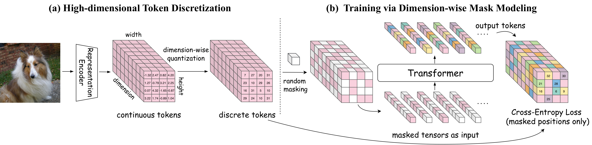

How CubiD Works
CubiD follows the discrete diffusion paradigm by treating generation as iterative denoising of masked tokens. Unlike traditional methods that mask entire spatial positions, CubiD performs fine-grained masking at the dimension level—treating the h×w×d tensor as a unified modeling space where any subset of dimensions at any position can be masked and predicted from the remaining visible context. This enables the model to capture rich dependencies both within and across spatial locations through bidirectional attention and standard cross-entropy loss.

Overview of Cubic Discrete Diffusion. (a) A frozen representation encoder extracts continuous tokens, which are discretized through dimension-wise quantization into h×w×d discrete tokens. (b) During training, we randomly mask tokens across both spatial and dimensional axes. The transformer learns to predict masked tokens from unmasked context, capturing the rich dependency structure across the entire tensor.
At inference, CubiD starts from a fully masked tensor and progressively unmasks tokens through iterative refinement—a coarse-to-fine process that establishes global structure first, then refines local details. Crucially, this requires only hundreds of iterations regardless of the 196,608 total tokens, decoupling generation cost from feature dimensionality.

Generation process. From fully masked (0%) to complete image (100%). At each step, the model predicts all masked tokens in parallel and unmasks a subset following a cosine schedule. The visualization reveals a natural coarse-to-fine progression.